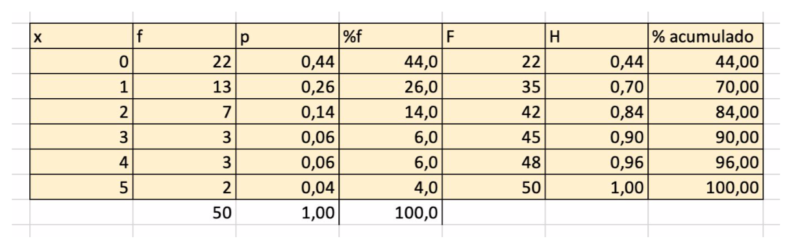
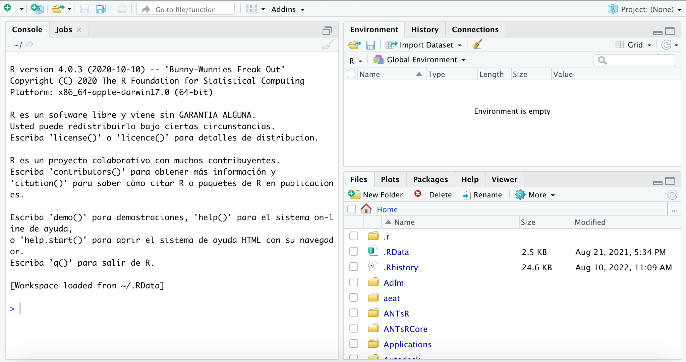

Capítulo 2 Análisis Exploratorio de Datos
En este apartado estudiaremos los conceptos básicos y las técnicas elementales para analizar un conjunto de datos y descubrir estructuras y relaciones entre ellos. Muchos de ellos son de sobra conocidos pero creemos que es importante citarlos todos evitando dar por conocidos aspectos básicos necesarios para estudios más avanzados
2.1 Conceptos previos
Vamos a definir una serie de conceptos que nos van a aparecer al hacer estudios estadísticos:
- Población: un grupo de individuos que comparten al menos una característica en común. En un nivel macro, esto podría referirse a toda la humanidad. En el nivel de una investigación clínica, la población puede referirse a las personas con cierta enfermedad o factor de riesgo. Es bastante posible tener una población bastante pequeña, es decir, en el caso de una condición muy rara. Los hallazgos de un estudio infieren sus resultados a una población más grande.
- Individuo: miembro de una población sobre el que se quiere investigar.
- Muestra: es una selección de miembros dentro de la población. La investigación se realiza utilizando ese conjunto de muestras de miembros y los resultados se pueden inferir a la población de la que se tomó la muestra. Este uso del análisis estadístico hace posible la investigación clínica ya que generalmente es casi imposible incluir a la población completa. Para que la muestra sea representativa es fundamental diseñ̃ar un buen método de muestreo.
- Parámetro: es valor que se calcula a partir de todos los valores en una población completa. Por ejemplo, si conociéramos la edad de cada individuo en la Tierra y calculamos la edad promedio o media, esa edad sería un parámetro
- Estadístico: es un valor que se calcula a partir de todos los valores de una muestra. Por ejemplo, la edad media de todos los participantes en un estudio sería un estadístico.
- Variable: hace referencia a cada una de las características de los individuos que son objeto de estudio.
2.2 Tipos de variables
De cara a aplicar distintas técnicas estadísticas, es muy importante saber de qué tipo es la variable con la que estamos trabajando ya que, dependiendo del tipo de variable, se aplican distintas técnicas o tests estadísticos. En un principio podemos distinguir 2 tipos:
- Cualitativas: expresan una cualidad.
- Cuantitativas: toman valores numéricos.
Ejemplos de variables cualitativas son el sexo de un individuo, su lugar de nacimiento, el tipo de enfermedad o la respuesta a un tratamiento (mejora, no varía o empeora). Así, podemos distinguir 2 tipos de variables cualitativas:
- Nominal: caracteriza un elemento de la población. En estas variables, no tienen sentido ni el orden ni operaciones aritméticas como el cálculo de la media. Ejemplo de variables cualitativas nominales son el sexo de un individuo o si está enfermo o sano..
- Ordinal: implica una posición ordenada o calificación. En el ejemplo anterior de enfermo o sano, podemos matizar y establecer grados de intensidad como leve, moderado o grave. De este modo, se establece un orden en esta clasificación.
Respecto a las variables cuantitativas o numéricas, atendiendo a la escala de medida, podemos distinguir 2 tipos:
- De Intervalo: además de clasificar y ordenar, establece diferencias numéricas exactas entre valores y permite fijar distancias entre valores a través de una unidad de medida y unos valores numéricos precisos. No existe el cero absoluto, se trata de un cero arbitrario o convencional. Por ejemplo, la temperatura de un paciente es una variable cuantitativa de intervalo ya que el 0 es convencional (pensemos en grados Celsius o Farenheit) ya que no significa ausencia de temperatura.
- De Razón :están definidas con el nivel de medićión de intervalo y ,además ,se puede establecer un origen o punto cero que representa la ausencia absoluta de la característica que se desea medir. Como ejemplos de este tipo de variables podemos citar la edad de un paciente, el número de plaquetas por microlitro o la presión sanguínea sistólica.
De cara a implementar estudios estadísticos, debemos ser prácticos a la hora de entender el tipo de variable. Hay veces en que variables cualitativas conviene que tomen valores discretos, por ejemplo, si un paciente desarrolla una complicación (valor 1) o no (valor 0). Y, por otro lado, cabe considerar como variables continuas a variables que, en el fondo, son discretas. Un ejemplo de esa situación puede ser la variable número de plaquetas por microlitro que es discreta pero, a efectos prácticos, se considera continua debido al gran número de valores distintos que toma.
2.3 Tablas de frecuencias
La construcción de tablas de frecuencias a partir de datos ha constituido hasta hace bien poco la herramienta para la elaboración de gráficos y el cálculo de valores típicos en un estudio estadístico. Con la aparición de programas estadísticos (SPSS© o R) que generan automáticamente los gráficos y cálculos deseados, las tablas de frecuencia han perdido cierto protagonismo. Sin embargo no las vamos a obviar ya que son muy útiles para entender conceptos básicos en cualquier estudio estadístico, nos van a permitir introducir la notación matemática en Estadística y, con ellas, vamos a realizar nuestras primeras prácticas con la hoja de cálculo.
Una tabla de frecuencias básica nos indica qué valores concretos se dan en la muestra y con qué frecuencia. Vamos a ilustrarlo con una serie de ejemplos sencillos para distintos tipos de variables.
Ejemplo 1: en un estudio médico con 50 pacientes, se consideró la variable “número de piezas dentales perdidas” obteniéndose los siguientes datos:
1, 3, 0, 3, 2, 0, 2, 0, 0, 2, 0, 1, 0, 0, 1, 0, 1, 4, 0, 0, 1, 4, 0, 1, 0, 0, 1, 0, 0, 2, 5, 4, 2, 1, 1, 0, 0, 0, 5, 1, 3, 0, 1, 0, 1, 2, 0, 2, 1, 0
El tamaño de la muestra es n = 50. Si llamamos X a la variable Número de piezas dentales perdidas, vemos que ésta toma 6 valores distintos X = {0, 1, 2, 3, 4, 5].
Definimos:
Frecuencia absoluta \(f_i\) del valor \(x_i\): número de datos iguales a \(x_i\).
Frecuencia relativa \(p_i\) del valor \(x_i\): cociente entre la frecuencia absoluta y el tamaño de la muestra \(\left( p_i=\frac{f_i}{n} \right)\)
Porcentaje del valor \(x_i\): producto de la frecuencia relativa por 100.
Frecuencia absoluta acumulada \(F_i\) del valor \(x_i\): número de datos menores o iguales a xi.
Frecuencia relativa acumulada \(H_i\) del valor \(x_i\): cociente entre la frecuencia absoluta acumulada y el tamaño de la muestra\(\left( H_i=\frac{h_i}{n} \right)\)
Porcentaje acumulado del valor \(x_i\): producto de la frecuencia relativa acumulada por 100.
Así, en la siguiente imagen puede verse la tabla de frecuencias del ejemplo anterior (con 2 decimales) construida con Excel.

2.3.1 Tabla de frecuencias (Práctica con Excel©)
Para realizar esta práctica, debe tener descargado en su ordenador el archivo 1.practicas.xlsx.
En el siguente vídeo se muestran los pasos para realizar la práctica.
2.3.2 Tabla de frecuencias (Práctica con R)
Para realizar esta práctica, abra RStudio. Le aparecerá una ventana como la siguiente:

En el espacio de trabajo (Workspace) de abajo a la izquierda no tiene más que escribir (o copiar y pegar) el código que se le irá proporcionando y pulsar la tecla enter para ejecutarlo.
Recordamos que nuestra práctica consiste en obtener tablas de frecuencias de un conjunto de datos. Recordamos que en nuestra práctica tenemos datos de 50 pacientes con el número de piezas dentales perdidas.
Con el siguiente código ejecutable, vamos a almacenar esos 50 datos en un vector (serie de números) con el nombre de piezas_perdidas. R utiliza la expresion <- para definir el nombre con el que almacenamos los datos, piezas_perdidas en nuestro ejemplo, y la función c( ) ( de concatenar) para almacenar los datos.
Ejecute el siguente código en RStudio (tiene la opción de copiarlo haciendo clic en el icono Copy to Clipboard):
piezas_perdidas <- c(1, 3, 0, 3, 2, 0, 2, 0, 0, 2, 0, 1, 0, 0, 1, 0, 1, 4, 0, 0, 1, 4, 0, 1, 0, 0, 1, 0, 0, 2, 5, 4, 2, 1, 1, 0, 0, 0, 5, 1, 3, 0, 1, 0, 1, 2, 0, 2, 1, 0)Verá que en la ventana Environment (arriba a la derecha) le ha aparecido un elemento llamado piezas_perdidas de tipo numérico y longitud 50. RStudio ha almacenado el vector con los 50 datos.
Vamos a obtener de forma muy sencilla la primera tabla de frecuencias absolutas ejecutando el siguiente código:
table(piezas_perdidas)## piezas_perdidas
## 0 1 2 3 4 5
## 22 13 7 3 3 2Así, R ha contado el número de datos del vector piezas_perdidas y en el resultado podemos ver que hay 22 pacientes con 0 piezas perdidas, 13 con 1 pieza perdida, etc.
Para las frecuencias relativas, vamos a almacenar la tabla de frecuencias absolutas con el monbre de tabla y obtendremos la tabla de frecuencias relativas con la función prop.table:
tabla <- table(piezas_perdidas)
prop.table(tabla)## piezas_perdidas
## 0 1 2 3 4 5
## 0.44 0.26 0.14 0.06 0.06 0.04Pruebe a comparar estos resultados con los de Excel©.
Así, la frecuencia relativa de pacientes con 1 pieza perdida es 0.26 (26%).
Ahora, podemos obtener la tabla de frecuencias absolutas acumuladas:
cumsum(tabla)## 0 1 2 3 4 5
## 22 35 42 45 48 50Así, hay 45 pacientes con 3 o menos piezas dentales perdidas.
2.3.3 Tablas de frecuencias (Práctica 2con Excel©)
Para realizar esta práctica, debe tener descargado en su ordenador el archivo 1.practicas.xlsx y abrir la hoja/pestaña 350 datos.
En el siguente vídeo se muestran los pasos para realizar la práctica.
2.3.4 Tablas de frecuencias (Práctica 3 con Excel© )
Para realizar esta práctica, debe tener descargado en su ordenador el archivo 1.practicas.xlsx y abrir la hoja/pestaña 350 datos.
En el siguente vídeo se muestran los pasos para realizar la práctica.
2.4 Números índices
Cuando tenemos datos a lo largo del tiempo, conviene compararlos en base a un valor determinado llamado periodo base. Así, los números índices muestran el movimiento de valores en una serie de tiempo convirtiendo las cantidades reales medidas en forma de índice o cantidades relativas. Estos valores se especifican en relación con un período base, por lo general designado como 100 o 100%.
Por ejemplo, consideremos los datos anuales del número de fallecidos en accidentes de tráfico 30 días después del accidente:

Podemos representar gráficamente estos datos con un sencillo diagrama de líneas:

De este modo, si consideramos como periodo base el año 1993, los números índices del resto de años se calculan dividiendo el número de fallecidos en cada año entre el número de fallecidos en 1993 (multiplicando por 100), es decir:
\(I_{t,1993}=\frac{x_t}{x_{1993}}\cdot 100\)
Así, obtenemos:

Vemos entonces que, en porcentaje, la disminución en 1994 respecto a 1993 fue del 12% (número índice = 88).
Puede interesar elegir otro periodo base. En nuestro ejemplo, vemos que a partir de 2003, se produce una disminución bastante significativa en el número de fallecidos debida, probablemente, al impacto de campañas de seguridad vial. Si ahora consideramos como periodo base el año 2003, tendremos:
\(I_{t,20033}=\frac{x_t}{x_{2003}}\cdot 100\)

Podemos representar esa variación en base al año 2003 con un diagrama de barras:

2.4.1 Números índices (Práctica con Excel©)
Para realizar esta práctica, debe tener descargado en su ordenador el archivo 1.practicas.xlsx y abrir la hoja/pestaña Nº accidentes.
En el siguente vídeo se muestran los pasos para realizar la práctica.
2.4.2 Números índices (Práctica con R)
Para realizar la práctica en R, debemos cargar los datos. El archivo original está disponible en este enlace
Puede descargar el archivo en formato csv (Comma Separated Values) en su ordenador. Le pedirá que se registre.
La otra opción es visualizar el contenido de ese archivo en este enlace

Vemos que los datos están en 3 columnas (de nombres “Año”; “Periodo”; “Accidentes de tráfico”) separados por puntos y comas. Debajo, vemos varias filas de metadatos del documento.
Prodecemos a cargar los datos desde la web y almacenarlos con el nombre data. Primero cargamos el paquete (library) readr de R y utilizamos la instrucción real_delim que nos permite leer el archivo. Finalmente indicamos con delim = “;” que los datos están separados por puntos y comas. Así, ejecute el siguiente código en RStudio:
library(readr)
data <- read_delim("https://raw.githubusercontent.com/1fjmanzano/bioestadistica/master/fallecidos_trafico.csv", delim = ";")## Warning: One or more parsing issues, see `problems()` for details## Rows: 41 Columns: 3
## ── Column specification ────────────────────────────────────────────────────────
## Delimiter: ";"
## chr (2): Año, Periodo
## dbl (1): Accidentes de tráfico
##
## ℹ Use `spec()` to retrieve the full column specification for this data.
## ℹ Specify the column types or set `show_col_types = FALSE` to quiet this message.Vemos que nos han aparecido algunos mensajes de aviso. En la ventana Environment (arriba a la derecha) verá que ha aparecido un elemento llamado data, de tipo spec_tbl_df (data frame) con 41 observaciones de 3 variables. Puede visualizar su contenido haciendo clic en el icono de la derecha o, también, ejecutando la orden View(data) en la consola.
Arriba a la izquierda le aparecerá una ventana con el contenido cargado en data. Vemos que disponemos de datos desde 1993 hasta 2019.
Procedemos a la limpieza del archivo antes de obtener los números índices. Vemos que para nuestra práctica, únicamente necesitamos las filas 1 ,2, 3, …, 27, es decir, nos sobran las filas 28:41. Vamos a seleccionar las filas 1 a 27. En nuestro conjunto de datos (data frame) necesitamos especificar dos dimensiones, filas y columnas. Para ello, usamos corchetes con la sintaxis objeto[filas,columnas]. Con la instrucción 1:27 antes de la coma (filas), seleccionamos las filas 1 a 27. Después de la coma no indicamos nada. Seguimos guardando los datos con el nombre de data.
data <- data[1:27,]Si comprueba el resultado, verá que han desaparecido las filas 28:41. En la ventana de Environment verá que se ha actualizado la dimension de data (ahora 27 obd. de 3 variables).
Para nuestro propósito, nos sobra la seguna columna Periodo. Procedemos a eliminarla usando corchetes. Ahora, como es una columna, debemos indicar la instrucción -2 (elimina la segunda columna) después de la coma.
data <- data[, -2]Puede comprobar que ha desaparecido la segunda columna (27 obs. de 2 variables).
Vamos a obtener un gráfico con los datos. Queremos representar los datos de la segunda columna Accidentes de tráfico. Para indicar a R que esos datos son los que queremos, usamos el símbolo del dólar $ después del nombre del dataframe. Además, como el nombre de la variable Accidentes de tráfico tiene espacios, debemos escribirlo entre comillas simples. R y en general cualquier lenguaje de programación, “se llevan mal” con los espacios en blanco. Para generar el gráfico, usamos la función plot().
plot(data$`Accidentes de tráfico`)R ha generado un gráfico de puntos con los 27 datos disponibles (de 1993 a 2019). Si queremos un gráfico de líneas, no tenemos más que añadir una coma y la instrucción type = “l”.
plot(data$`Accidentes de tráfico`,type = "l")
Finalmente, vemos que en el eje X (horizontal) no aparecen los años. Para ello, podemos considerar los datos como una serie de tiempo time.series con la función ts() del dataframe data (quitando la primera columna) e indicando el comienzo y el final para, finalmente, obtener el gráfico con plot().
time.series <- ts(data[,-1], start=1993, end=2019)
plot(time.series)
Vamos a generar en el dataframe data una columna con los números índices en base al número de fallecidos por accidente de tráfico en 1993. Comenzamos guardando el la variable fallecidos1993 dicho valor (de 6.378). Para ello, indicamos que en la columna Accidentes de tráfico de data queremos el primer valor ([1]).
fallecidos1993 <- data$`Accidentes de tráfico`[1]
fallecidos1993## [1] 6.378Cuidado porque el valor numérico tiene un punto decimal lo que indica que la unidad de medida es de miles como podíamos observar en el eje vertical de los gráficos anteriores.
Ahora, definimos una nueva columna i1993 sin más que dividir los valores de la columna Accidentes de tráfico entre el valor fallecidos1993.
data$i1993 <- data$`Accidentes de tráfico`/fallecidos1993Puede comprobar que, ahora. el dataframe data tiene 27 obs. de 3 variables. La columna que acabamos de generar, tiene valores numériicos con muchos decimales. Podemos redondear a 2 decimales.
data$i1993 <- format(round(data$i1993,2))Si queremos obtener los números índices en base a 2003, no tenemos más que ejecutar el siguiente código teniendo en cuenta que, ahora, queremos el valor 11 (correspondiente al año 2003) de la columna Accidentes de tráfico.
fallecidos2003 <- data$`Accidentes de tráfico`[11]
data$i2003 <- data$`Accidentes de tráfico`/fallecidos20032.5 Representaciones gráficas
2.5.1 Introduccción
Se suele decir que una imagen vale más que mil palabras y esto es muy cierto en estudios estadísticos. Como ejemplo de la aplicación de visualización de datos en ámbito médico, podemos citar el caso de Florence Nightingale considerada la madre de la enfermería moderna. En 1854 es enviada a prestar servicios en la guerra de Crimea (actual Ucrania). Allí, Nightingale y sus compañeras de trabajo reformaron a fondo el hospital con lo que lograron reducir la tasa de mortalidad desde el 40% al 2%. Para ilustrar las causas de mortalidad del ejército en el hospital que dirigía, en vez de utilizar complejas tablas con datos numéricos, hizo uso de gráficos que facilitaban la comprensión de los hechos para que las autoridades comprendieran la situación y tomaran medidas al respecto. Así, dependiendo del tipo de variable que estemos estudiando, será más conveniente utilizar un gráfico u otro.
Diagrama de las causas de la mortalidad del ejército del Este. Fuente: Wikipedia
2.6 Diagramas de barras y sectores
Este tipo de gráficos, de sobra conocidos, se utilizan para variables cualitativas y cuantitativas discretas.
Así, los datos de la siguiente tabla:

están representados como diagrama de barras y gráfico de sectores:
Las hojas de cálculo tienen herramientas que permiten cambiar parámetros de configuración en estos gráficos añadiendo leyendas, porcentajes, etc.
Generalmente, comparamos mejor utilizando medidas lineales que circulares. Otras forma de ver esos datos es con un diagrama de barras apiladas:
Además, los diagramas de barras agrupados permiten comparar variables de forma visual. Por ejemplo, los datos de la siguiente tabla,
contienen datos sobre la evolución de 3 grupos de pacientes (a los que se les puede haber suministrado distintos tratamientos, por ejemplo). Así, los diagramas de barras:
aportan una información visual de dichos datos comparándolos por grupo o por evolución. El posterior análisis estadístico de estos datos permitirá establecer si hay diferencias significativas entre estos grupos y la evolución pero con estas gráficas, podemos intuir estos resultados.
2.6.1 Diagramas de barras y sectores (Práctica con Excel©)
Para realizar esta práctica, debe tener descargado en su ordenador el archivo 1.practicas.xlsx y abrir la hoja/pestaña correspondiente.
En los siguentes vídeos se muestran los pasos para realizar la práctica.
2.7 Histogramas
Los histogramas son una generalización de los diagramas de barras en los que la variable es cuantitativa continua o discreta con un número elevado de valores. Un ejemplo podemos verlo en el siguiente gráfico:
en el que tenemos agrupados, por intervalos de edad, el número de defunciones en España en 2017. Los datos han sido tomados del Instituto Nacional de Estadística Podemos ver el mismo histograma en el que, en vez de tener frecuencias absolutas, tenemos frecuencias relativas (proporciones):
Comparando los diagramas de las frecuencias absolutas y relativas observamos que la escala del eje vertical ha variado, pero la representación gráfica es exactamente la misma pero, en este caso, si el ancho de cada rectángulo (barra) es 1, al sumar el área de todos los rectángulos obtenemos un valor total igual a 1.
Amplitud y número de intervalos:
En el ejemplo anterior, todos los intervalos excepto el primero, tienen la misma amplitud (5 años) y los teníamos definidos en una columna. Puede ocurrir que tengamos un gran número de datos (más de 1000) con los que podemos definir el número de intervalos (discretización). En esta imagen se ve el histograma correspondiente al peso de 1030 pacientes con el número de intervalos (rangos) generado automáticamente con Excel©:
Y, en esta imagen, vemos el histograma del mismo conjunto de datos con 10 intervalos (rangos):
2.7.1 Histogramas con Excel© (Prácticas)
Para realizar esta práctica, debe tener descargado en su ordenador el archivo 1.practicas.xlsx y abrir la hoja/pestaña correspondiente.
En los siguentes vídeos se muestran los pasos para realizar las prácticas.
2.8 Otros gráficos
Existen muchos otros tipos de gráficos que son útiles dependiendo de la información que queramos mostrar.
2.9 Medidas de posición, dispersión y forma
Cuando tenemos un conjunto de datos, podemos obtener información muy resumida de los mismos a través de una serie de valores. En este apartado veremos las siguientes medidas y valores:
2.9.1 Medidas de posición centrales
La media aritmética de un conjunto de datos numéricos es quizá la medida más intuitiva que tenemos todos en mente. Simplemente, se obtiene sumando los valores de todos los datos y se divide el valor obtenido entre el número de datos. Por ejemplo, para el siguiente conjunto de datos:
4, 5, 6, 9, 11, 13, 64
la media \(\overline{x}\) es 16:
\(\frac{4+5+6+9+11+13+64}{7}=16\)
La expresión matemática, siendo \(x_i\) los valores, n el número de datos y \(f_i\) la frecuencia absoluta es:
\(\overline{x}=\frac{\sum_{i=1}^{n}x_i}{n}= \frac{1}{n}\sum_{i=1}^{k}x_i\cdot f_i\)
La mediana es el valor que está justo en medio de todos los demás valores. Eso significa que la mitad de los valores son más altos y la mitad son más bajos que este valor, independientemente de cuánto más altos o bajos sean.
En el ejemplo anterior
4, 5, 6, 9, 11, 13, 64
tenemos 7 valores ordenados de menor a mayor. El 9 es el que ocupa el valor central por lo que la mediana es 9. Si el número de datos fuese par, habría 2 valores centrales por lo que la mediana se calcularía como la media aritmética de esos dos valores.
Así, en este sencillo ejemplo, vemos que la media es 15 y la mediana es 9. El valor 15 es intuitivamente una sobreestimación ya que sólo uno de los valores (64) es más grande que él, lo que hace que de alguna manera no sea representativo de los otros valores. Es por esto que siempre es interesante calcular media y mediana en un conjunto de datos. Además, algunos test estadísticos se aplican sobre la mediana.
La moda es el valor que más se repite y se suele utilizar para describir variables cualitativas. Puede haber más de una moda. En este ejemplo sobre el grado de una enfermedad:
la moda es “Moderado”. En este otro conjunto de datos:
5, 6, 7, 8, 9, 11, 5, 3, 2, 4, 5, 5, 9, 10, 5, 11
la moda es 5.
2.9.2 Medidas centrales (Práctica)
Para realizar esta práctica, debe tener descargado en su ordenador el archivo 1.practicas.xlsx y abrir la hoja/pestaña correspondiente.
En el siguente vídeo se muestran los pasos para realizar la práctica.
2.9.3 Medidas de posición no centrales
El cuantil de orden p de un conjunto de datos es un valor tal que la proporción de valores menores que él es p. De este modo, la mediana es el cuantil más conocido ya divide la muestra en dos partes de proporción 0.5 (50%). Así, la mediana es un cuantil de orden 0.5.
Los cuartiles dividen al conjunto de datos en 4 partes, cada una de ellas de frecuencia 25%. Se denotan por \(Q_1\), \(Q_2\) y \(Q_3\). Así, el porcentaje de valores menores que \(Q_1\) es el 25%, el porcentaje de valores menores que \(Q_2\) es el 50% (\(Q_2\) es la mediana) y el porcentaje de valores menores que \(Q_3\) es el 75%.
Si dividimos la muestra, el conjunto de datos en 100 partes iguales, obtenemos los percentiles, que van de \(p_1\) a \(p_{99}\). De nuevo, la mediana coincide con el percentil 50 y los cuartiles \(Q_1\) y \(Q_3\) coinciden con \(p_{25}\) y \(p_{75}\) respectivamente.
2.9.4 Medidas no centrales (Práctica)
Para realizar esta práctica, debe tener descargado en su ordenador el archivo 1.practicas.xlsx y abrir la hoja/pestaña correspondiente.
En el siguente vídeo se muestran los pasos para realizar la práctica.
2.9.5 Medidas de dispersión
Este tipo de medidas nos dan información sobre si nuestro conjunto de datos tiene mucha variabilidad o no, es decir, si los datos están muy dispersos o concentrados en torno a las medidas centrales.
Veamos intuitivamente qué información nos aportan las medidas de dispersión. Si vemos los histogramas de estas dos distribuciones de 200 datos cada una:

en ambos casos la media es 9.8. Las escalas son iguales y podemos observar que en la distribución A, los valores están más agrupados en torno a la media que en la distribución B donde están más separados, más “dispersos”. Las medidas de dispersión son números que concretan esta idea.
El rango es la diferencia entre el máximo valor y el mínimo valor de un conjunto de datos.
El rango intercuartílico (IQR) es la diferencia entre el cuartil 3 y el cuartil 1, es decir, indica la amplitud del intervalo en el que está el 50% de los datos. Es un dato que complementa a la mediana.
El dato del rango intercuartílico y la mediana permite hacer una representación gráfica de los datos mediante los diagramas de cajas y bigotes (boxplot o box and whisker plot) además de localizar datos atípicos (outliers).
En el ejemplo utilizado para la media y la mediana:
4, 5, 6, 9, 11, 13, 64
comprobamos que el valor 64 es un dato atípico (outlier) ya que está muy distante del resto.
Veamos otro ejemplo. En esta tabla
tenemos 30 datos distribuidos en 3 grupos. Podemos obtener el rango y el rango intercuartílico:

y los diagramas de cajas y bigotes de estas 3 distribuciones de datos:

Al estar en sentido vertical, en cada caso el valor inferior de la caja corresponde a \(Q_1\) y el superior a \(Q_3\). Así, la longitud de la caja es el rango intercuartílico. La línea en la caja es el valor de la mediana y aparece el valor de la media con una X. Para los datos A y C, los extremos de los bigotes corresponden a los valores máximo y mínimo. En el caso de los datos B, vemos 2 puntos arriba y abajo correspondientes a 2 valores atípicos. Hay varias formas de calcular la longitud de los bigotes. Uno de ellos es considerar que un valor es atípico si se encuentra 1.5 veces de la longitud de la caja.
La varianza es la medida de dispersión más utilizada en estadística ya que tiene en cuenta la distancia, la diferencia de todos los valores con respecto a la media.
Si a cada dato le restamos la media y sumamos todos esos resultados, es fácil comprobar que vamos a obtener 0:
\(\sum(x_i-\overline{x})=0\)
ya que al sumarse las diferencias de los datos superiores, positivas al ser mayores de la media, éstas se van a anular con las inferiores, negativas al ser menores que la media.
Una solución es tomar todos esas diferencias con signo positivo, es decir, en valor absoluto. Así obtenemos ladesviación media:
\(D=\frac{\sum|x_i-\overline{x}|}{n}\)
Sin embargo, esta solución conlleva algunos problemas técnicos al considerarse positivos números que, en realidad, son negativos.
Para analizar eficientemente las diferencias a la media, la idea es elevar esas diferencias al cuadrado, obteniéndose así siempre números positivos. Por otro lado, al elevar al cuadrado se ponderan los valores cercanos y lejanos a la media. De este modo, se calcula la media de los cuadrados de las diferencias de los datos a la media. Esa es la varianza:
\(s^2=\frac{\sum(x_i-\overline{x})^2}{n}\)
Así, la unidad de medida de la varianza es la unidad de medida que con la que estemos trabajando elevada al cuadrado (pulsaciones al cuadrado, peso al cuadrado, etc.).
La varianza también puede obtenerse como:
$s^2= - ^2 $
En este caso, se calculan los cuadrados de los datos, se suman y se divide entre el número de datos. Al resultado se le resta el cuadrado de la media.
La unidad de medida de la varianza es la unidad de medida de los datos elevada al cuadrado. Para utilizar la misma unidad de medida que los datos, se define la desviación típica o estándar como la raíz cuadrada de la varianza. Se suele denotar por s (si es relativa una muestra) o con la letra griega sigma minúscula (si es relativa a toda la población):
\(\sigma=\sqrt{\frac{\sum(x_i-\overline{x})^2}{n}}\)
La desviación típica es un complemento de la media ya que indica el grado de dispersión de los datos respecto al centro de los datos, respecto a la media.
La desigualdad de Chevyshev es ampliamente utilizada para distinguir datos que se separan “excesivamente” de la media. Cuando sabemos que los datos toman valores “normales” como los resultados de un análisis de sangre, podemos establecer que:
en el intervalo \((\overline{x}-2\sigma, \overline{x}+2\sigma)\) están, al menos, el 75% de los datos
en el intervalo \((\overline{x}-3\sigma, \overline{x}+3\sigma)\) están, al menos, el 88% de los datos.
Finalmente, podemos considerar esa desviación en porcentaje para poder comparar conjuntos de datos con distintas medias. Obtenemos el coeficiente de variación dividiendo la desviación típica entre la media y multiplicando el resultado por 100:
\(C.V.=\frac{\sigma}{n}\cdot 100\)
2.9.6 Medidas de dispersión (Práctica)
Para realizar esta práctica, debe tener descargado en su ordenador el archivo 1.practicas.xlsx y abrir la hoja/pestaña correspondiente.
En el siguente vídeo se muestran los pasos para realizar la práctica.
2.9.7 Normalización de datos
Frecuentemente se deben ajustar los valores medidos en diferentes escalas respecto a una escala común, a menudo previamente a un proceso de realizar promedios. Este ajuste se conoce como normalización.
Existen varios tipos de normalizaciones en estadística. Vamos a comentar dos de ellos.
- Normalización basada en la unidad (Max-Min): se define una nueva variable X’ teniendo en cuenta los valores máximo y mínimo de los datos originales X obteniéndose datos entre 0 y 1. La nueva variable se define por:
\(X'=\frac{X-X_{min}}{X_{max}-X_{min}}\)
- Normalización residual: en este caso, se define una nueva variable X’ teniendo en cuenta la media y la desviación típica:
\(X'=\frac{X-\mu}{\sigma}\)
Cabe indicar que la media y la desviación típica pueden ser la de la población (\(\mu\) y \(\sigma\) en caso de ser conocidas) o la de la muestra (\(\overline{x}\) y s). Si los datos se distribuyen “normalmente”, la variable X’ tiene media 0 y desviación típica 1.
2.9.8 Normalización de datos (Práctica)
Para realizar esta práctica, debe tener descargado en su ordenador el archivo 1.practicas.xlsx y abrir la hoja/pestaña correspondiente.
En el siguente vídeo se muestran los pasos para realizar la práctica.